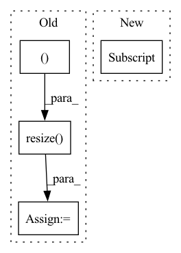

Pattern ID :24903
Before Change
mask = (predictions[batch_id][0].cpu().numpy() > 0).astype(np.uint8) * 255
mask = unpad_from_size(pads, image=mask)["image"]
mask = cv2.resize(
mask, (widths[batch_id].item(), heights[batch_id].item() ), interpolation=cv2.INTER_NEAREST
)
(hparams["output_mask_path"] / folder_name).mkdir(exist_ok=True, parents=True)
cv2.imwrite(str(hparams["output_mask_path"] / folder_name / f"{file_id}.png"), mask)
After Change
prob = predictions[batch_id][0].cpu().numpy().astype(np.float16)
with open(str(hparams["output_path"] / folder_name / f"{file_id}.txt")) as f:
f.write(prob)
In pattern: SUPERPATTERN
Frequency: 5
Non-data size: 4
Instances Fragment ID: 76731091
Project Name: ternaus/check_orientation
Commit Name: a75e3361032928b0a9d2215da376432ed9119128
Time: 2020-11-12
Author: iglovikov@gmail.com
File Name: check_orientation/inference.py
M Class Name: AnonimousClass
N Class Name: AnonimousClass
M Method Name: predict(4)
N Method Name: predict(4)
M Parent Class:
N Parent Class:
M File Name: check_orientation/inference.py
N File Name: check_orientation/inference.py
M Start Line: 123
M End Line: 149
N Start Line: 142
N End Line: 149
Before Change
height = int(img.size[1] * ratio)
img = img.resize((width, height), Image.ANTIALIAS)
elif size is not None:
img = img.resize( (size, size ), Image.ANTIALIAS)
elif scale is not None:
img = img.resize((int(img.size[0] / scale), int(img.size[1] / scale)), Image.ANTIALIAS)
return img if return_pil else np.array(img)
After Change
def load_image(img_path, width=None):
img = sio.imread(img_path).astype(np.float32)
if img.shape[2] == 4: // remove alpha channel
img = img[:, :, :3]
img /= 255.0 // get to [0, 1] range
if width is not None and width != -1:
ratio = width / img.shape[0]
height = int(img.shape[1] * ratio) Fragment ID: 76731094
Project Name: gordicaleksa/pytorch-neural-style-transfer
Commit Name: 6856e5796971c3fb5e77c0a798b35e6e106b5bcb
Time: 2020-03-30
Author: gordicaleksa@gmail.com
File Name: utils/utils.py
M Class Name: AnonimousClass
N Class Name: AnonimousClass
M Method Name: load_image(2)
N Method Name: load_image(5)
M Parent Class:
N Parent Class:
M File Name: utils/utils.py
N File Name: utils/utils.py
M Start Line: 12
M End Line: 22
N Start Line: 18
N End Line: 27
Before Change
if self.backend == "pil":
image = Image.open(self.image_paths[item])
if self.resize is not None:
image = image.resize(
(self.resize[1], self.resize[0] ), resample=Image.BILINEAR
)
image = np.array(image)
if self.augmentations is not None:
augmented = self.augmentations(image=image)
image = augmented["image"]After Change
image = cv2.imread(self.image_paths[item])
image = cv2.cvtColor(image, cv2.COLOR_BGR2RGB)
else:
image = cv2.imread(self.image_paths[item] , cv2.IMREAD_GRAYSCALE)
if self.augmentations is not None:
augmented = self.augmentations(image=image)
image = augmented["image"] Fragment ID: 76731092
Project Name: abhi1thakur/tez
Commit Name: dda5ac9c1e1ea0e43e08f5f490b86ea8eb413efd
Time: 2020-12-26
Author: abhishek4@gmail.com
File Name: tez/datasets/image_classification.py
M Class Name: ImageDataset
N Class Name: ImageDataset
M Method Name: __getitem__(2)
N Method Name: __getitem__(2)
M Parent Class:
N Parent Class:
M File Name: tez/datasets/image_classification.py
N File Name: tez/datasets/image_classification.py
M Start Line: 41
M End Line: 67
N Start Line: 46
N End Line: 63
Before Change
input_img = cv2.cvtColor(image, cv2.COLOR_BGR2RGB)
// Resize input image
input_img = cv2.resize( input_img, (input_width, input_height ))
// Scale input pixel values to 0 to 1
input_img = input_img / 255.0
input_img = input_img.transpose(2, 0, 1)
input_tensor = input_img[np.newaxis, :, :, :].astype(np.float32)After Change
def prepare_input(image, input_shape, stride, pt):
input_tensor = LetterBox(input_shape, auto=pt, stride=stride)(image=image)
input_tensor = input_tensor.transpose((2, 0, 1))[::-1] // HWC to CHW, BGR to RGB
input_tensor = np.ascontiguousarray(input_tensor).astype(np.float32) // contiguous
input_tensor /= 255.0 // 0 - 255 to 0.0 - 1.0
input_tensor = input_tensor[None].astype(np.float32) Fragment ID: 76731098
Project Name: augmentedstartups/as-one
Commit Name: 37de4fbaee82f479c5ca8d53a2450c7083056ef1
Time: 2023-01-16
Author: umair.imran@axcelerate.ai
File Name: asone/detectors/yolov8/utils/yolov8_utils.py
M Class Name: AnonimousClass
N Class Name: AnonimousClass
M Method Name: prepare_input(4)
N Method Name: prepare_input(2)
M Parent Class:
N Parent Class:
M File Name: asone/detectors/yolov8/utils/yolov8_utils.py
N File Name: asone/detectors/yolov8/utils/yolov8_utils.py
M Start Line: 7
M End Line: 15
N Start Line: 7
N End Line: 12
Before Change
// rgb_img = img_tensor.squeeze(0).permute(1, 2, 0).cpu().numpy() // [1,C,H,W]->[H,W,C]
bgr_img = cv2.imread(img_path, 1)
bgr_img = cv2.resize( bgr_img, (224, 224 ), interpolation=cv2.INTER_CUBIC)
bgr_img = np.float32(bgr_img) / 255 // 归一化
with GradCAM(model=model, target_layers=target_layers) as cam:
cam.batch_size = 32After Change
// 1. [B,C,H,W]->[C,H,W] 2. 反归一化
rgb_img = img_tensor.cpu().squeeze(0) * t_std + t_mean
// 1. RGB->BGR 2. [C,H,W] -> [H,W,C]
bgr_img = rgb_img[[2, 1, 0], :, :] .permute(1, 2, 0).numpy()
try:
with cam_algorithm(model=model, target_layers=target_layers) as cam: Fragment ID: 76731096
Project Name: bobo0810/classification
Commit Name: 1836c97e5c32c77787b9748173377cbabfa908dc
Time: 2022-03-30
Author: lipengbo@kanzhun.com
File Name: Utils/tools.py
M Class Name: AnonimousClass
N Class Name: AnonimousClass
M Method Name: vis_cam(4)
N Method Name: vis_cam(4)
M Parent Class:
N Parent Class:
M File Name: Utils/tools.py
N File Name: Utils/tools.py
M Start Line: 105
M End Line: 120
N Start Line: 130
N End Line: 161